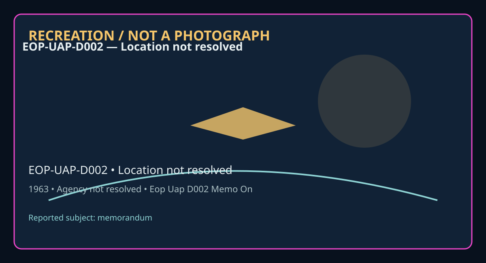

Release 07 / archival case file / EOP-UAP-D002
Eop Uap D002 Memo On Interagency Coordination For The Recovery Of Foreign Materiel May 1963
This eop uap d002 memo on places a memorandum thread in a 1963 Location not resolved record.
ID: EOP-UAP-D002
Filename:
EOP-UAP-D002-Memo_on_Interagency_Coordination_for_the_Recovery_of_Foreign_Materiel-May_1963.pdfDate marker: 1963
Location: Location not resolved
Agency or collection signal: Agency not resolved
Pages read: 1

RECREATION / NOT A PHOTOGRAPH. The diagram is an interpretive editorial aid, not source imagery.
What this document says
The opening page's extracted text begins: “- • Authority: NND 968063 May 29, 1963 MEMORANDUM FOR DR. WELSH Subject: Conference with Frutkin - - Fragments I saw Frutkin (and his assistant Marvin Robinson) for more than an hour in his office on May 28. It was necessary to review the background and course of the meetings held last year because he was away at the time and now is very negative on the project. Frutkin seems to feel that: 1. No public announcement is now needed; 2. An Executive Order or statement from the White House would scare people needlessly; 3. The problem is overseas and State woul d like to be able to point to NASA as the U. S . responsible agency (without a scary public announcement); 4. DOD and AF want to use NASA for a "cover" but have no intention of letting NASA do anything but return some pieces; 5. CIA and NASA get along fine and can do so in the future on this matter; 6. NASA should wait to see what the USIB settles on (and would like to have us pass Frutkin' s comments on the DOD paper to AEC (at staff levels for information); and 7. Although NASA was drafting legislation, they (legal?) would oppose sending anything up to Congress in the foreseeable future because of the harmful debate it would touch off. ~~ R. W. Hal e”
Across the 1 pages, the recurring terms are memorandum. Those details belong to this file, not to a generic case template. Page-level reading follows:
- Page 1: - • Authority: NND 968063 May 29, 1963 MEMORANDUM FOR DR. WELSH Subject: Conference with Frutkin - - Fragments I saw Frutkin (and his assistant Marvin Robinson) for more than an hour in his office on May 28. It was necessary to review the background and course of the meetings held last year because he was away at the time and now is very negative on the proj
Historical context and disclosure schema
Read in context, this record belongs to the 1963 information environment: Agency not resolved paperwork, a Location not resolved setting, and the reporting conventions visible in the source. Its broader disclosure value is procedural as well as anecdotal: it shows how an observation, material question, investigation, or analytical program was routed, described, and preserved. That makes it comparable to other Release 07 records without collapsing unlike evidence into one event.
Evidence limits
The source establishes that this document exists and records what its authors or quoted witnesses wrote. It does not, by itself, prove the identity, performance, origin, or physical reality of the reported subject. Extraction preserves wording but cannot restore missing attachments, authenticate provenance, or independently validate testimony. Interpretations beyond the page-specific record remain hypotheses.
Source: supplied PDF in research/tranche-07. This article is a research aid, not a claim that the reported object was non-human.